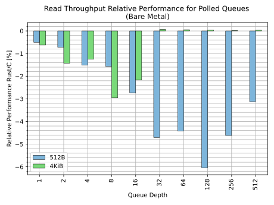
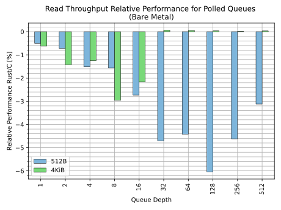

Rust for Linux
Rust for Linux is the project adding support for the Rust language to the Linux kernel.
This website is intended as a hub of links, documentation and resources related to the project.
The project
- Contact
- Contributing
- Branches
- Rust version policy
- Unstable features
- Backporting and stable/LTS releases
- Third-party crates
- Out-of-tree modules
- Industry and academia support
- Sponsors
Subprojects
Tools
Users
Links
Contact
Security
Issue tracking
Branches
Documentation
- Kernel documentation (mainline)
- Kernel documentation (next)
- rustdoc code docs (v6.6-rc2)
- rustdoc code docs (rust 2023-03-13)
- Out-of-tree module template
Conferences
LWN
Toolchain projects
Other trees
Other resources
Contact
Mailing list
The rust-for-linux@vger.kernel.org mailing list is primarily meant for patch submission and reviewing, as well as announcements and technical discussions on mainline development:
Please read the Mailing list etiquette document if it is the first time you send an email to a Linux kernel mailing list.
For general questions, please use the Zulip chat instead.
Zulip chat
For chat, we use Zulip.
Please feel free to use it for general questions, discussion, help, feedback, etc.
Open Meeting
Everybody is welcome to join our Open Meeting.
It takes place once every kernel cycle, the first Wednesday after -rc1 is tagged, at 18:00 UTC.
GitHub issue tracker
GitHub is used for issue reporting, tracking and discussion.
Please do not report security bugs in the GitHub issue tracker. Instead, please read the Security bugs page in the kernel documentation.
For other matters, please feel free to contact the maintainers via email.
Contributing
There are many ways to contribute to Rust for Linux. One way is to contribute to the kernel itself — the rest of this page focuses on that. But there are other ways as well:
-
In Rust:
-
Helping to stabilize unstable features the kernel requires.
-
Adding support for features we would like in the kernel: in the language, in the standard library, in the compiler, in
rustdoc, in Clippy, inbindgen... Please see the various "wanted features & bugfixes" lists for each topic.
-
-
Contributing to the subprojects:
klintandpinned-init. -
Contributing to the Coccinelle for Rust project.
-
Contributing to the
rustc_codegen_gccproject, which will be used by the kernel for GCC builds. -
Contributing to the GCC Rust project, which eventually will provide a second toolchain for GCC builds.
The kernel development process
The Rust support is part of the Linux kernel, and thus contributing works the same way as for the latter. That implies, among other things:
-
A patch-based workflow is used.
-
Reviews take place in the different mailing lists of the kernel.
-
Contributions are signed under the Developer's Certificate of Origin.
To learn more about the kernel development process, please read the documentation under Documentation/process. In particular, please make sure to read submitting-patches.rst.
In addition, it may be a good idea to contribute a small cleanup or fix somewhere in the kernel (not necessarily to Rust code), in order to get accustomed to the patch-based workflow. From time to time we add "good first issues" to our GitHub issue tracker for that purpose.
Ways to contribute
There are many ways to contribute to the Rust support in the kernel:
-
Submitting changes, of course, whether it is new code or improvements to existing code. Please see the details below on this option.
-
Reviewing patches, especially if you have experience with unsafe Rust and have an eye to spot unsoundness issues or with Rust API design in general. Reviewers can get credited within commits messages via the
Reviewed-bytag. -
Testing patches. Like reviewing, running meaningful testing increases the confidence that the patch is OK. Testers can get credited within commits messages via the
Tested-bytag. -
Reporting issues you find. Reporters can get credited within commits messages via the
Reported-bytag. -
Suggesting improvements. Good ideas that end up being implemented can get credited within commit messages via the
Suggested-bytag. -
Helping others on Zulip. For instance, getting them started with the Rust support in the kernel.
The Rust subsystem
The Rust subsystem takes care of the core Rust abstractions as well as the general infrastructure for Rust in the kernel. It is a bit special in that it potentially intersects with every other subsystem in the kernel, especially in the beginning of the Rust support in the kernel.
For this reason, early on, there are a few extra notes to have in mind when contributing Rust code to the kernel.
Submitting changes to existing code
All patches containing Rust code should be sent to both the maintainers/reviewers/mailing lists of the relevant kernel subsystem they touch as well as the Rust one.
This applies even if the files that the patch modifies are all under rust/ (e.g. currently all abstractions live under rust/, but the plan is to change this in the future as Rust grows in the kernel) and the files are referenced by the MAINTAINERS entry of the relevant subsystem. Scripts like scripts/get_maintainers.pl may not provide the complete list.
The goal with this procedure is that everybody interested in Rust can follow what is going on with Rust in the entire kernel in the early stages, to avoid duplicate work, and to make it easier for everybody to coordinate.
For instance, if a patch modifies rust/kernel/time.rs, then the patch should be sent to both "TIMEKEEPING" and "RUST".
Ideally, the maintainers of the particular subsystem will take the changes through their tree, instead of going through the Rust one.
Please make sure your code is properly documented, that the code compiles warning-free under CLIPPY=1, that the code documentation tests pass and that the code is formatted.
Submitting new abstractions and modules
For new abstractions and modules, and especially for those that require new kernel subsystems/maintainers to be involved, please follow the approach outlined here.
-
Kernel maintainers and developers interested in using Rust should take the lead in developing missing abstractions/modules for the subsystems they need.
-
Part of the work may be already done or in the process of being upstreamed, thus please first check the mailing list archive as well as the PRs submitted to GitHub. It is also a good idea to ask on our Zulip chat.
-
As early as possible, please get in touch with the maintainers of the relevant subsystem in order to make them aware of the work you are doing or planning to do. That way, they can give you input and feedback on the process. Please feel free to Cc the Rust maintainers too.
-
When you are getting closer to patch submission, please consider sending an RFC series first, especially if it is a major contribution, or if it is a long patch series, or if you require a lot of prerequisite patches (e.g. for abstractions of other subsystems) that are not yet upstreamed.
The RFC can be based on top of a branch placed somewhere else that contains the prerequisite patches, so that the RFC patches themselves do not cover those, and therefore is focused on the parts that the maintainers will eventually review.
This way, you can get early design feedback before the actual patch submission later, and the discussion is focused on the given subsystem (rather than the prerequisites).
-
In general, the kernel does not allow to integrate code without users, but exceptions can potentially be made for Rust code to simplify the upstreaming process early on. That is, upstreaming some dependencies first so that it is easier to upstream expected in-tree users later on. However, note that this is not meant to be a way to justify upstreaming APIs that do not have agreed upon in-tree users. In particular, out-of-tree modules do not constitute a user in this context.
Please contact the Rust maintainers for help, especially if you find yourself with a lot of dependencies or patches for unrelated subsystems.
Submitting patches
If you are using a CLI tool like git-send-email or b4, then you may find the following commands useful for generating the options needed for submitting patches to the Rust subsystem:
awk '/^RUST$/,/^$/' MAINTAINERS | grep '^M:' | cut -f2- | xargs -IP echo --to \'P\' \\
awk '/^RUST$/,/^$/' MAINTAINERS | grep '^[RL]:' | cut -f2- | xargs -IP echo --cc \'P\' \\
This list includes the maintainers (M:), reviewers (R:) and mailing list (L:) of the "RUST" subsystem in the MAINTAINERS file.
However, please keep in mind that this does not cover additional subsystems that you may need to submit your patches to, as explained in the other sections.
Branches
Currently we maintain the following branches.
rust-next
rust-next is the branch that contains new Rust features to be submitted during the next merge window of the Linux kernel.
Changes to this branch land via patches sent to the mailing list.
It is part of linux-next.
rust-fixes
rust-fixes is the branch that contains Rust fixes for the current cycle of the Linux kernel.
Changes to this branch land via patches sent to the mailing list.
It is part of linux-next.
rust-dev
rust-dev is an experimental branch for integration purposes. It is a queue for patches that "look good enough".
Its intended use cases are:
- Finding merge/apply conflicts as early as possible.
- Providing a common base for development that requires features that are not yet in mainline or
rust-next, i.e. giving early access to features. This may include Rust-related changes from other subsystems. - Providing extra testing to patches by making them easily available to more developers.
Note that this branch may be updated/rebased frequently and it might be gone in the future.
rust
rust was the original branch where development happened for two years before Rust support was merged into the kernel.
It contains most of the abstractions that the project worked on as a prototype/showcase. Some of those will eventually land upstream, others may be reworked with feedback from upstream, and a few may be dropped if unneeded.
The branch is now effectively frozen, and generally the only changes that are merged into it are intended to minimize the difference with respect to mainline. When the diff is small enough, the branch will be archived/removed. Until then, the branch is useful to see what is left to upstream, and for some downstream projects to base their work on top.
However, please feel free to submit new PRs for this branch. This is useful so that others are aware of what you are working on. Even if you cannot submit a PR, please consider telling us about it.
Changes to this branch land via GitHub PRs. GitHub Actions is used as a pre-merge CI, compiling the kernel and booting it under QEMU for different toolchains, architectures and configurations. It also checks that some tests passed (e.g. loading sample modules, KUnit tests...) as well as building the PR under Clippy, building the docs, checking rustfmt, etc. KernelCI tests it. Finally, in the past, the Ksquirrel bot checked the PRs sent to it.
Rust version policy
Supported versions
The kernel documents the minimal requirements to compile it. In the case of Rust, currently only a single version is supported (i.e. rather than a minimum):
A particular version of the Rust toolchain is required. Newer versions may or may not work because the kernel depends on some unstable Rust features, for the moment.
The reason is that we cannot guarantee newer Rust versions will work due to the unstable features in use1. Removing the need for them is a priority in order to be able to eventually declare a minimum Rust version for the kernel.
Having said that, generally speaking, newer versions should work, as long as one patches any potential compilation errors coming from changes in unstable features.
Note that the Rust language is stable, i.e. it promises backwards compatibility. See the Unstable features page for details.
Distribution toolchains
Some Linux distributions provide Rust toolchains (i.e. built by the distribution maintainers, rather than redistributing the ones from rust-lang.org). These toolchains should be fine to use, as long as they have not been modified in unexpected ways (and keeping in mind the versioning limitations).
Update policy
Before a minimum version can be declared
It remains to be decided how often the Rust version upgrades will land. Currently, we are tracking the latest Rust release as closely as possible, but it remains to be seen how other kernel developers feel about it.
On top of that, if the klint support is merged and starts to be routinely used, then we will also need to be mindful of its schedule.
After a minimum version is declared
If we follow a similar model to the GCC and LLVM support in the kernel (which is likely), then we will not track the latest Rust release (i.e. as a minimum), though how wide the window will be remains to be seen. It is possible we may start with a small window and then widen it, similar to what was originally decided for the LLVM support in the kernel.
Submitting upgrades
Please do not submit patches to upgrade the Rust version. If you want to discuss upgrading the Rust version in the kernel, then please contact us.
Feedback
We are looking for feedback from Linux distributions, companies and other users and maintainers of downstream kernel releases.
In particular, it would be useful to know:
-
What versions/policy would work best your distribution/company.
-
If the kernel cannot satisfy exactly that (which is likely, given the current constraints), whether you would prefer to maintain a given compiler version for a while or to backport support from a newer version from mainline.
Unstable features
Introduction
The Rust language is stable, i.e. it promises backwards compatibility within the same edition, with a few exceptions, such as reserving the right to patch safety holes. The kernel currently uses Edition 2021, which is the latest.
On top of that, the kernel uses some Rust unstable features. These features can only be accessed by opting into them. They are typically used as a way to introduce new features into the language, library and toolchain to allow end users to experiment with them and provide feedback before committing to them.
"Unstable" in this context means the feature may change in future versions, i.e. backwards compatibility is not promised for those features. It does not imply that the features are broken. For instance, unstable features may be production-ready and ready for stabilization or they may be experimental, incomplete or internal to the compiler.
When unstable features are deemed mature enough, they may get promoted into stable Rust. In other cases, they may get dropped altogether. Some features are internal to the compiler or perma-unstable.
There are ongoing discussions around stability within the Rust project, such as potentially defining extra phases. These finer-grained levels could be useful for the kernel.
Usage in the kernel
The unstable features used in the kernel are tracked at issue #2.
Removing the need for these is a priority in order to be able to eventually declare a minimum Rust version for the kernel.
Therefore, the set of unstable features used in the kernel needs to be carefully considered. Typically, for each of them, we need to consider:
-
Whether there is no other way around the issue they help with, or whether the alternative is considered to have bigger downsides than using the unstable feature.
-
Whether they would be required to build the kernel.
-
Whether stabilization is likely, whether they are internal to the compiler and whether they are used in the standard library.
-
Whether other features that are on the critical path will likely take longer to get stabilized anyway.
Moreover, most of the features are only allowed within the kernel crate, i.e. for abstractions. Elsewhere (e.g. drivers), only a minimal set is allowed (see the rust_allowed_features variable in scripts/Makefile.build).
If you would like to use a new Rust unstable feature in the kernel, then please contact us.
alloc
alloc is part of the Rust standard library and its implementation uses many unstable features. Normally, this library (as well as core and others) is provided by the compiler, and thus those unstable features do not break users' code.
Currently, the kernel contains a fork of alloc (matched to the supported Rust version by the kernel) with some additions on top. This complicates compiling the kernel with a different compiler version due to those unstable features, but this fork is meant to be temporary: the original plan for alloc discussed with upstream Rust (and others) is documented in-tree in the rust/alloc/README.md file.
Discussions with upstream Rust are ongoing to see what the eventual solution for alloc will be.
Backporting and stable/LTS releases
The stable and longterm (LTS) kernel releases only receive fixes, and thus do not accept new features. Therefore, it is not possible to backport Rust support into those kernel releases. Moreover, there is a significant cost in maintaining a stable branch.
Having said that, we are aware that there is growing interest in backported Rust support for, at least, 5.15 and 6.1. There are several questions around the possibility of supporting an stable/LTS release on Rust for Linux's side:
-
Whether the support is best-effort or intended to be used in production, and the security and scheduling implications.
-
Whether all new abstractions, drivers and overall features appearing in mainline are backported, and whether those that require extra backports on the C side to support them should be included.
-
Whether the Rust version policy would be different than the one in mainline, e.g. whether the version would be fixed.
-
Whether to provide it as a rebasing branch (i.e. as a set of patches) on top of the stable/LTS ones or as an actual stable branch.
If your company, organization or team would be interested in such releases with backported Rust support, then please contact us.
Third-party crates
Introduction
Rust provides a package manager and build system called Cargo. Rust also provides crates.io, its default package registry. In userspace, all these form a solution that a lot of open-source Rust projects use.
Some of those open-source libraries are potentially usable in the kernel because they only depend on core and alloc (rather than std), or because they only provide macro facilities.
Thus it is natural to consider whether some of these libraries could be reused for the kernel.
Suitability of a crate
Even if a library only depends on core and alloc, it may still not be usable within the kernel for other reasons.
For instance, its license may be incompatible, it may not support fallible allocations, the kernel may only need a very small subset of what it supports (even if it supports configuring out some of its features), the kernel may already provide the same functionality on the C side (which could be abstracted), etc.
On top of that, the code of a crate may require some changes to be adapted for the kernel anyway. For instance, adding SPDX license identifiers, removing a dependency, tweaking some code, enabling an unstable feature, etc.
Moreover, new code arriving to the kernel should be maintained; and thus somebody needs to step up for that role.
Therefore, in general, whether a third-party crate is suitable for the kernel needs to be decided on a case-by-case basis.
Importing crates
The kernel currently integrates some dependencies (e.g. some of the compression algorithms or our Rust alloc fork) by importing the files into its source tree, adapted as needed. In other words, they are not fetched/patched on demand.
There have been discussions about potentially incorporating a system where crates/libraries are fetched dynamically given a list of crates, versions, hashes, etc.; however, it remains to be seen whether such a system would be preferred and accepted.
Supporting out-of-tree modules
The project is focused on getting features upstreamed, i.e. available for everybody. Therefore, if mainline does not support third-party crates and/or a system to fetch them dynamically, then it is unlikely it will be supported for out-of-tree modules.
Experiment
Experimental integration for a few popular crates has been provided for interested users, e.g. PR #1007 adds support for proc-macro2, quote, syn, serde and serde_derive.
Feedback
We are looking for feedback from other kernel developers, maintainers and companies on which third-party crates would be most useful to have in the kernel.
Out-of-tree modules
The Linux kernel supports building out-of-tree modules. Both C and Rust modules can be developed as out-of-tree ones, and we provide a basic template for an out-of-tree Linux kernel module written in Rust.
However, please note that the Rust for Linux project is part of the kernel and has always focused its efforts towards getting code into the mainline kernel.
In particular, this means that Rust internal APIs can be changed at any time, just like C ones, when the need arises. Similarly, code present at any point in our different branches is not intended to form a stable base for out-of-tree development.
In addition, patches submitted to the mailing list should generally focus on in-tree development efforts. In particular, Rust abstractions submitted upstream require in-tree users. Abstractions intended for out-of-tree users cannot be merged. Even if those abstractions may be obviously useful for future in-tree users, there needs to be an agreed upon in-tree user.
For these reasons and others, please consider submitting your use cases upstream — see the importance of getting code into the mainline.
Having said that, we understand that some module development is done out-of-tree and may not be possible to upstream. Even in those cases, if your company, organization or team has a use case for Rust, please contact us, since it is important to highlight those use cases early on in order to showcase the interest from industry and academia in Rust.
Industry and academia support
“Google supports and contributes directly to the Rust for Linux project. Our Android team is evaluating a new Binder implementation and considering other drivers where Rust could be adopted.”
— Google, 2021.
“Arm recognises the Rust value proposition and is actively working with the Rust community to improve Rust for Arm based systems. A good example is Arm’s RFC contribution to the Rust language which made Linux on 64-bit Arm systems a Tier-1 Rust supported platform.
Rustaceans at Arm are excited about the Rust for Linux initiative and look forward to assisting in this effort.”
— Arm, 2021-06-29.
“Microsoft's Linux Systems Group is interested in contributing to getting Rust into Linux kernel. Hopefully we will be able to submit select Hyper-V drivers written in Rust in the coming months.”
— Microsoft, 2021-06-29.
“There is interest in using Rust for kernel work that Red Hat is considering.”
— Red Hat, 2021-07-08.
“Rust for Linux is a key step towards reducing security-critical kernel bugs, and on the path towards our ultimate goal of making Linux free of security-critical bugs. We are using Rust in our OS research, and adoption is easier with an existing Rust in the Linux kernel framework in place.”
— Thomas Anderson, University of Washington, 2022-06-23.
“We are convinced that Rust is changing the landscape of system programming by applying the research done on programming languages in the last decades. We wanted to see how the language was able to help us write code we are really comfortable with thanks to the extensive static checking.”
— Esteban Blanc, Arthur Cohen and Martin Schmidt, LSE (Systems Research Laboratory) at EPITA (École pour l'informatique et les techniques avancées), 2022-06-23.
“Being able to use Rust in the Linux kernel is an incredible milestone on the road to a more secure future for the Internet and everything else that depends heavily on Linux.”
— ISRG's Prossimo Project, 2022-10-18.
“Samsung is actively engaged in supporting the integration of Rust code into the Linux Kernel. Recognizing the significant benefits that Rust brings to kernel and system software development, particularly in terms of enhancing security and reducing critical bugs, Samsung is committed to enabling kernel developers to write block layer device drivers using the Rust programming language. By embracing modern programming languages like Rust, Samsung aims to attract new talent to systems development and promote memory safety within the Linux storage stack.”
— Samsung, 2023-05-17.
“Cisco supports the inclusion and development of Rust in the Linux kernel as a way of eliminating memory safety bugs and vulnerabilities. We are developing a next-generation container filesystem in Rust and, to this end, we are contributing time, code, and the testing effort to the Rust for Linux project.”
— Cisco, 2023-09-14.
“Collabora feels privileged to partner with customers who envision Rust as an integral part of the Linux kernel's future. We are committed to supporting the integration of Rust into as many Linux subsystems as appropriate over the coming years. By doing so, this will enable our customers, and many more developers, to increase the reliability of their Linux kernel contributions. We extend our gratitude for the activities undertaken by the Rust for Linux Initiative.”
— Collabora, 2023-09-22.
If your company, organization, university or team is using or plans to use Rust for Linux and would like to release a statement, then please contact us. Thank you!
Sponsors
Prossimo project
Internet Security Research Group (ISRG), through their Prossimo project, supports Miguel Ojeda and supported Gary Guo to work on Rust for Linux, which was made possible with generous financial support from Google and Futurewei.
“Our mission is to reduce financial, technological, and educational barriers to secure communication over the Internet.”
“Prossimo is an Internet Security Research Group (ISRG) project. Its goal is to improve the Internet's security-sensitive software infrastructure by addressing memory safety issues in C and C++ code via the use of memory safe languages.”
Zulip
Zulip sponsors free Zulip Cloud Standard hosting for Rust for Linux.

“Zulip is an open-source modern team chat app designed to keep both live and asynchronous conversations organized.”
klint
klint is a tool that allows to introduce extra static analysis passes ("lints") in Rust kernel code, leveraging the Rust compiler as a library. One of the first lints available validates that Rust code follows the kernel locking rules by tracking the preemption count at compile-time.
The main developer and maintainer is Gary Guo.
pinned-init
pinned-init is a solution to The Safe Pinned Initialization Problem. It provides safe and fallible initialization of pinned structs using in-place constructors.
The main developer and maintainer is y86-dev.
The Safe Pinned Initialization Problem
Introduction to Pinning
In the kernel many data structures are not allowed to change address, since there exist external pointers to them that would then be invalidated. Since this could cause memory errors, Rust has to somehow guarantee that this cannot happen in safe code. Luckily there already exists the Pin<P> wrapper type for arbitrary pointer types P. For simplicity we will look at P = Box<T>. Box<T> is a smart pointer that owns a T (a generic parameter) allocated on the heap. When a Box<T> is dropped (destroyed) then it automatically frees the memory.
Pin<Box<T>> behaves similar to Box<T>, it is also a smart pointer and allows you to have immutable access to the fields and functions of T. You can also store it just as easily, since it also has the same size as Box<T>.
One important difference compared to just Box<T> is that Pin prevents mutable access to the underlying Box<T> and thus makes it impossible to move the pointee. So users are unable to call e.g. mem::swap. This is of course a heavy restriction, so there exist unsafe functions that allow modification and access to &mut T and so called pin-projections to access fields of T. However, when using these functions, it is the caller's responsibility to uphold the pinning guarantee.
This guarantee also includes that the object is droped before the memory is deallocated or repurposed. At first glance, this requirement seems strange. But after this example it will hopefully seem very natural. Let's imagine that we want to design a Rust version of list_head1:
#![allow(unused)] fn main() { /// # Invariants /// /// `next` and `prev` always point to a valid `ListHead`. struct ListHead { next: *mut ListHead, prev: *mut ListHead, } }
Then we need to ensure that as long as an element is in a list, it will stay alive, since it would cause a UAF (use after free) otherwise. A simple way to achieve this, is to remove it from the list, when it gets dropped:
#![allow(unused)] fn main() { impl Drop for ListHead { fn drop(&mut self) { let prev = self.prev; let next = self.next; // SAFETY: By the invariant, these pointers are valid. unsafe { (*next).prev = prev; (*prev).next = next; } } } }
And this is the important bit, if we were to just deallocate/reuse the memory of a ListHead without dropping it first, by e.g. using ptr::write, then we are just begging for a UAF to happen.
Because the Box<T> smart pointer owns its memory, it cannot be used for a function which does not consume the value. For this reason the mutable reference &mut T is used. When dealing with Pin<Box<T>>, we cannot access &mut T. Instead we can access Pin<&mut T> which still upholds the pinning guarantee.
Adding Initialization into the mix
What does initialization have to do with pinning? In the first paragraph nothing suggested that there would be a connection. One important feature of Rust forces this connection. In Rust all values have to be initialized at all times. This is a problem for creating our ListHead the usual Rust way; a new() function that returns the object by value. Since we first need to know its address before we can initialize next and prev to point to itself.
Rust has a way around the "values are vaild at all times" problem: MaybeUninit<T> is a wrapper that explicitly allows uninitialized values. unsafe functions are then used to access the T once initialized. For our ListHead we could simply allocate a MaybeUninit<ListHead> and then write its address using raw pointers into next and prev. However, as already said above, in Rust the normal way of creating an object is to return it by value. We cannot do this for the ListHead, since that would move it and invalidate its pointers. The alternative of allocating it on the heap, i.e. returning a Pin<Box<ListHead>> also does not work, since this list should be part of a bigger struct.
This is the reason why Rust-for-Linux chose a two-function approach:
#![allow(unused)] fn main() { impl ListHead { /// Creates a new [`ListHead`]. /// /// # Safety /// /// Before using this [`ListHead`] the caller has to call [`ListHead::init`]. unsafe fn new() -> ListHead { ListHead { next: ptr::null_mut(), prev: ptr::null_mut(), } } /// Initializes this [`ListHead`]. /// /// # Safety /// /// This function is only called once. unsafe fn init(self: Pin<&mut Self>) { // SAFETY: We do not move `self`. let this: &mut Self = unsafe { self.get_unchecked_mut() }; let ptr: *mut ListHead = this; unsafe { (*ptr).prev = ptr; (*ptr).next = ptr; } } } }
This approach avoids having to allocate and lets the user decide the memory location of the ListHead. It also ensures that a ListHead will be pinned in memory, since the self type of init is Pin<&mut Self>. Both functions have to be marked unsafe, since the safety preconditions cannot be enforced by the compiler. We also have to use two functions, since after a call to new the caller will have to pin the value in memory prior to calling init.
The biggest problem with this approach is that it exclusively relies on the programmer to ensure safety. It is very easy to forget such an init call when you have a struct with multiple fields that require this treatment. This problem is exacerbated by the fact that this API propagates to all structs that contain a ListHead:
#![allow(unused)] fn main() { struct DoubleList { list_a: ListHead, list_b: ListHead, } impl DoubleList { /// # Safety /// /// Before using this [`DoubleList`] the caller has to call [`DoubleList::init`]. unsafe fn new() -> ListHead { DoubleList { // SAFETY: We call `ListHead::init` in our own initializer. list_a: unsafe { ListHead::new() }, // SAFETY: We call `ListHead::init` in our own initializer. list_b: unsafe { ListHead::new() }, } } /// # Safety /// /// This function is only called once. unsafe fn init(self: Pin<&mut Self>) { // SAFETY: We structurally pin `list_a`. let list_a = unsafe { self.map_unchecked_mut(|s| &mut s.list_a) }; // SAFETY: Our function is only called once. unsafe { ListHead::init(list_a) }; // SAFETY: We structurally pin `list_b`. let list_b = unsafe { self.map_unchecked_mut(|s| &mut s.list_b) }; // SAFETY: Our function is only called once. unsafe { ListHead::init(list_b) }; } } }
So not only the kernel crate developers have to cope with this API, but everyone who dares to have a Mutex<T> in their struct, or use a struct that transitively contains a Mutex<T>.
Pin Complications
The previous example also shows a different, but related issue: pin-projections. These are how we access the fields of pinned structs. And because one can break the pinning guarantee the map_unchecked_mut function has to be unsafe. The requirement for them is consistency, you are only allowed to either structurally pin a field, so you allow the access of Pin<&mut Struct> -> Pin<&mut Field>, or you do not structurally pin the field, i.e. allowing Pin<&mut Struct> -> &mut Field. As long as only one of those options is done, the pinning guarantee is upheld.
In userland Rust this problem is addressed by using the pin-project crate. This crate generates the pin-projections from the struct definition:
#![allow(unused)] fn main() { #[pin_project] struct DoubleList { #[pin] list_a: ListHead, #[pin] list_b: ListHead, } }
Now both fields are structurally pinned and can be safely accessed.
This crate cannot be used in the kernel, since it relies on syn -- the de facto Rust code parsing library for proc-macros. The problem with including syn in the kernel is that it consists of over 50k lines of code.
There is also the pin-project-lite crate that achieves almost the same thing without a proc-macro. It has 5k lines of code and contains a very complex macro that would require further modification to serve this purpose, which would be hard to maintain.
These reasons ultimately resulted in not using any of the existing approaches. The problem of pin projections also prompted the creation of the field projection RFC.
If you now want to view how to use the API, then take a look at the extensive documentation.
Further Resources on Pinning
- Rust documentation: https://doc.rust-lang.org/core/pin/index.html
- Pinning and its problems outlined in the context of futures: https://fasterthanli.me/articles/pin-and-suffering
- Pinning in Rust -- Kangrejos Presentation https://kangrejos.com Slides: https://kangrejos.com/Pinning%20in%20Rust.pdf
The example presented here, glosses over some very important details. The next and prev
fields of the ListHead struct should actually be placed in Cell<T>s to allow modification
through &ListHead, since we cannot have multiple &mut ListHeads at the same time. And we
need to have multiple when iterating through a list. Also, ListHead should contain a
PhantomPinned field to ensure it cannot be unpinned.
Ksquirrel
Ksquirrel was a GitHub bot that helped newcomers to the kernel get accustomed to the kernel requirements for submissions (e.g. checking that commit messages were properly signed and formatted). It was also useful as a double-check for maintainers that they did not forget to check those requirements.
We may bring it back for mailing list submissions!
Coccinelle for Rust
Coccinelle is a tool for automatic program matching and transformation that was originally developed for making large scale changes to the Linux kernel source code (ie, C code). Matches and transformations are driven by user-specific transformation rules having the form of abstracted patches, referred to as semantic patches. As the Linux kernel, and systems software more generally, is starting to adopt Rust, we are developing Coccinelle for Rust, to make the power of Coccinelle available to Rust codebases.
Examples
Changing a method call sequence in the Rust implementation:
@@
expression tcx, arg;
@@
- tcx.type_of(arg)
+ tcx.bound_type_of(arg).subst_identity()
Replace Generic Bound with Impl Trait:
@@
identifier f, P, p;
type T1, T2;
@@
- f<P: T1>(p: P) -> T2
+ f(p: impl T1) -> T2
{ ... }
Current status
Coccinelle for Rust is currently a prototype. It relies on Rust Analyzer for parsing and rustfmt for pretty printing. It mainly supports matching and transformation of expressions and types, but reasoning about control flow is not yet supported.
Availability
A recent talk about Coccinelle for Rust
Contact
- Julia Lawall: Julia.Lawall@inria.fr
- Tathagata Roy: tathagata.roy1278@gmail.com
rustc_codegen_gcc
rustc_codegen_gcc is a GCC ahead-of-time codegen for rustc, meaning that it can be loaded by the existing rustc frontend, but benefits from GCC by having more architectures supported and having access to GCC’s optimizations.
Rust for Linux can be compiled with rustc_codegen_gcc which allows to have a GCC-compiled Linux kernel with Rust kernel modules compiled with GCC as well.
Blog with updates about the progress of the GCC codegen.
Building rustc_codegen_gcc and the sysroot
The following have been tested with GCC commit b334f15ed21c95868059a16484a1948be08e26a3 and rustc_codegen_gcc commit c6bc7ecd65046ee502118664f42637ca318cdfb5.
Follow the build instructions here.
Building Rust for Linux
Follow the Rust for Linux Quick Start instructions with a few changes as explained below.
Since the GCC codegen might not work on every nightly version (that should soon be fixed now that we run some tests in the Rust CI), we're going to use the same nightly version as the GCC codegen instead of using the version recommended by Rust for Linux:
rustup override set nightly-2023-10-21 # Adjust to the version used by the GCC codegen.
Now, you need to set some variables to build Rust for Linux with the GCC codegen (do not forget to adjust your path to rustc_codegen_gcc):
make -j20 KRUSTFLAGS="-Zcodegen-backend=/path/to/rustc_codegen_gcc/target/debug/librustc_codegen_gcc.so \
--sysroot /path/to/rustc_codegen_gcc/build_sysroot/sysroot" \
HOSTRUSTFLAGS="-Zcodegen-backend=/path/to/rustc_codegen_gcc/target/debug/librustc_codegen_gcc.so \
--sysroot /path/to/rustc_codegen_gcc/build_sysroot/sysroot -Clto=no"
Since we use a different nightly version, you might need to adjust the code of the alloc crate built by Rust for Linux.
You'll see some errors when running the above command in this case.
Troubleshooting
If that didn't build the Rust object files, run make menuconfig again and check if the "Rust support" is available.
It could be that you have RUST_IS_AVAILABLE [=n].
In that case, run make rustavailable with the KRUSTFLAGS you used above.
That should give you the correct error, which could be one of those:
libgccjit.so.0: cannot open shared object file: No such file or directory- In this case, make sure you set
LD_LIBRARY_PATHandLIBRARY_PATH.
- In this case, make sure you set
Source code for the 'core' standard library could not be found- In this case, make sure you used a recent enough version of
rustc_codegen_gcc(c6bc7ecd65046ee502118664f42637ca318cdfb5 or more recent should be good) that copies the source of the sysroot at the correct location.
- In this case, make sure you used a recent enough version of
Contact
Please contact Antoni Boucher (antoyo) on IRC.
NVMe Driver
The Rust NVMe driver is an effort to implement a PCI NVMe driver in safe Rust for use in the Linux Kernel. The purpose of the driver is to provide a vehicle for development of safe Rust abstractions and to prove feasibility of Rust as an implementation language for high performance device drivers.
The Linux Rust NVMe driver lives
here. This branch is routinely
rebased on upstream Linux releases. Please be aware that the nvme branch is
force pushed without notice. The version based on the deprecated rust branch
is available here.
The Rust NVMe driver was originally authored by Wedson Almeida Filho and is now maintained by Andreas Hindborg (Samsung).
The driver is not currently suitable for general use.
Resources
6.7 Rebase Performance (nvme-6.7)
Setup
- 12th Gen Intel(R) Core(TM) i5-12600
- 32 GB DRAM
- 1x INTEL MEMPEK1W016GA (PCIe 3.0 x2)
- Debian Bullseye userspace
- LTO results are enabled by a build system patch (a hack) that was not yet published.
Results
- 30 samples
- Difference of means modeled with t-distribution
- P99 confidence intervals

Difference Relative
Plot shows (mean_iops_r - mean_iops_c) / mean_iops_c'
Performance November 2023 (nvme-6.6)
Setup
- 12th Gen Intel(R) Core(TM) i5-12600
- 32 GB DRAM
- 1x INTEL MEMPEK1W016GA (PCIe 3.0 x2)
- Debian Bullseye userspace
- LTO results are enabled by a build system patch (a hack) that was not yet published.
Results
- 30 samples
- Difference of means modeled with t-distribution
- P99 confidence intervals

Difference

Difference Relative
Plot shows (mean_iops_r - mean_iops_c) / mean_iops_c'

Performance September 2023
The driver was
rebased
on top of
rust-next
PR for 6.6 in September 2023.
Setup
- 12th Gen Intel(R) Core(TM) i5-12600
- 32 GB DRAM
- 1x INTEL MEMPEK1W016GA (PCIe 3.0 x2)
- Debian Bullseye userspace
Results


Performance January 2023
Performance evaluation as of January 2023.
Setup
- Dell PowerEdge R6525
- 1 CPU socket populated - EPYC 7313, 16 cores
- 128 GB DRAM
- 3x P5800x 16GT/s x4 7.88 GB/s (PCIe 4)
- Debian bullseye (linux 5.19.0+)
Results
 

Analysis
For 4 KiB block size, the Rust NVMe driver performs similar to the C driver. For this configuration the target drive is bandwidth limited.
For 512 B block size, the C driver outperforms the Rust driver by up to 6%. In this configuration the drive is not bandwidth limited, but the benchmark becomes compute limited. The Rust driver has a higher overhead and thus performs worse.
Work Items
- Remove all unsafe code from the driver
- Support device removal
- Verify functionality by executing
blktestsandxfstestsin CI - Add sys-fs nodes to allow use of
nvme-cliwith Rust NVMe driver - Support more kernel configurations by deferring initialization to a task queue
- Improve performance of Rust NVMe driver
Contact
Please contact Andreas Hindborg through Zulip.
Null Block Driver
The Rust null block driver rnull is an effort to implement a drop in
replacement for null_blk in Rust.
A null block driver is a good opportunity to evaluate Rust bindings for the block layer. It is a small and simple driver and thus should be simple to reason about. Further, the null block driver is not usually deployed in production environments. Thus, it should be fairly straight forward to review, and any potential issues are not going to bring down any production workloads.
Being small and simple, the null block driver is a good place to introduce the Linux kernel storage community to Rust. This will help prepare the community for future Rust projects and facilitate a better maintenance process for these projects.
Statistics from the
commit log of the C null_blk
driver
(before
move)
show that the C null block driver has had a significant amount of memory safety
related problems in the past. 41% of fixes merged for the C null block driver
are fixes for memory safety issues. This makes the null block driver a good
candidate for rewriting in Rust.
The driver is implemented entirely in safe Rust, with all unsafe code fully contained in the abstractions that wrap the C APIs.
Features
Implemented features:
blk-mqsupport- Direct completion
- SoftIRQ completion
- Timer completion
- Read and write requests
- Optional memory backing
Features available in the C null_blk driver that are currently not implemented
in this work:
- Bio-based submission
- NUMA support
- Block size configuration
- Multiple devices
- Dynamic device creation/destruction
- Queue depth configuration
- Queue count configuration
- Discard operation support
- Cache emulation
- Bandwidth throttling
- Per node hctx
- IO scheduler configuration
- Blocking submission mode
- Shared tags configuration (for >1 device)
- Zoned storage support
- Bad block simulation
- Poll queues
Resources
6.7 Rebase (rnull-6.7)
Changes from null_blk-6.6:
- Move to
Foliofor memory backing instead ofPage - Move to
XArrayfor memory backing instead ofRaddixTree
Performance
Setup
- 12th Gen Intel(R) Core(TM) i5-12600
- 32 GB DRAM
- Debian Bullseye userspace
Results
- Plot shows
(mean_iops_r - mean_iops_c) / mean_iops_c - 40 samples
- Difference of means modeled with t-distribution
- P95 confidence intervals

Performance September 2023 (null_blk-6.6)
Setup
- 12th Gen Intel(R) Core(TM) i5-12600
- 32 GB DRAM
- 1x INTEL MEMPEK1W016GA (PCIe 3.0 x2)
- Debian Bullseye userspace
Results
- Plot shows
(mean_iops_r - mean_iops_c) / mean_iops_c - 40 samples
- Difference of means modeled with t-distribution
- P95 confidence intervals
Performance September 2023
Setup
- 12th Gen Intel(R) Core(TM) i5-12600
- 32 GB DRAM
- 1x INTEL MEMPEK1W016GA (PCIe 3.0 x2)
- Debian Bullseye userspace
Results
In most cases there is less than 2% difference between the Rust and C drivers.


Contact
Please contact Andreas Hindborg through Zulip.
Android Binder Driver
This project is an effort to rewrite Android's Binder kernel driver in Rust.
The latest version of the Rust implementation can be found in the RFC that was submitted to the Linux Kernel mailing list on November 1st: Setting up Binder for the future.
Motivation
Binder is one of the most security and performance critical components of Android. Android isolates apps from each other and the system by assigning each app a unique user ID (UID). This is called "application sandboxing", and is a fundamental tenet of the Android Platform Security Model.
The majority of inter-process communication (IPC) on Android goes through Binder. Thus, memory unsafety vulnerabilities are especially critical when they happen in the Binder driver.
Maintenance
The Rust driver was originally authored by Wedson Almeida Filho, and is now maintained by Alice Ryhl. The ongoing work will be part of the Android Open Source Project.
PuzzleFS filesystem driver
PuzzleFS is a container filesystem designed to address the limitations of the existing OCI format. The main goals of the project are reduced duplication, reproducible image builds, direct mounting support and memory safety guarantees, some inspired by the OCIv2 design document.
Reduced duplication is achieved using the content defined chunking algorithm FastCDC. This implementation allows chunks to be shared among layers. Building a new layer starting from an existing one allows reusing most of the chunks.
Another goal of the project is reproducible image builds, which is achieved by defining a canonical representation of the image format. Direct mounting support is a key feature of puzzlefs and, together with fs-verity, it provides data integrity.
Lastly, memory safety is critical to puzzlefs, leading to the decision to implement it in Rust. Another goal is to share the same code between user space and kernel space in order to provide one secure implementation.
Resources
- PuzzleFS main repository
- PuzzleFS kernel branch
- Issue tracking the development of the kernel driver
- Talk at Open Source Summit Europe
- Kangrejos slides
- LWN article
Maintenance
The PuzzleFS driver is maintained by Ariel Miculas. Contact him at amiculas@cisco.com or through Zulip.
Apple AGX GPU driver
As part of the Asahi Linux project, the Apple AGX GPU driver has been implemented in Rust for the Linux kernel, along with creating DRM bindings and associated userspace pieces.
The driver lives here. The current development team is:
- Alyssa Rosenzweig is writing the OpenGL driver and compiler.
- Asahi Lina is writing the kernel driver and helping with OpenGL.
- Dougall Johnson is reverse-engineering the instruction set with Alyssa.
- Ella Stanforth is working on a Vulkan driver.